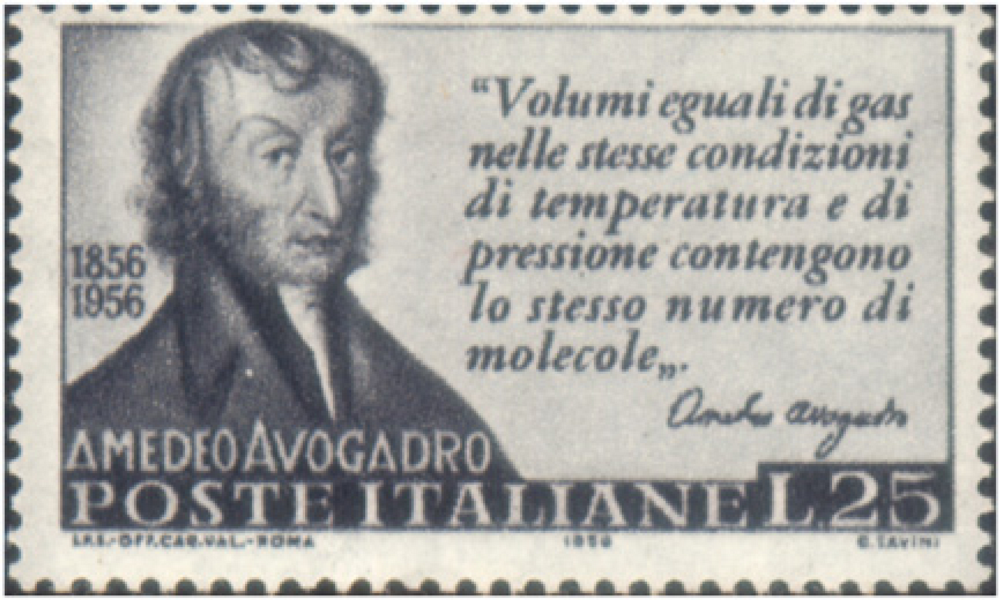
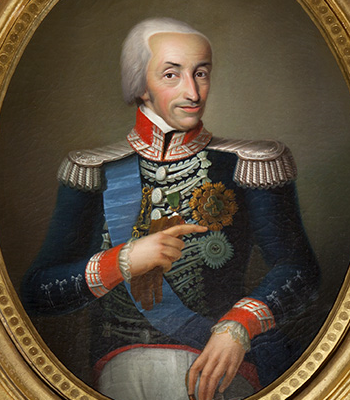
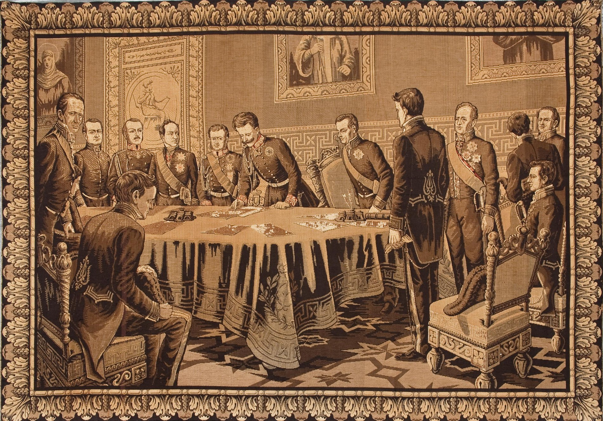

FACT
Amedeo Avogadro
FACT 1
11 Juli 1811
He was most noted for his contributions to molecular theory, known as Avogadro's law

FACT 2
In 1820 - 1850
He became professor of physics at the University of Turin
FACT 3
In 1821
He was active in the revolutionary movements against King Victor Emmanuel I

FACT 4
In 1848
He obtained the Constitution (Albertino Statuto) from King Charles Albert

FACT 5
In 1796
Before becoming a famous physicist, he followed in the footsteps of his father as a lawyer
FACT 6
In 1809
He began teaching at Liceo (High School) at Vercelli

FACT 7
In 1789
He was began his college education and graduated at the age of 16
FACT 8
9 August 1776
He was born in Turin and came from a noble family of the Kingdom of Sardinia